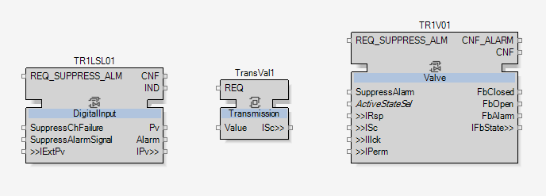
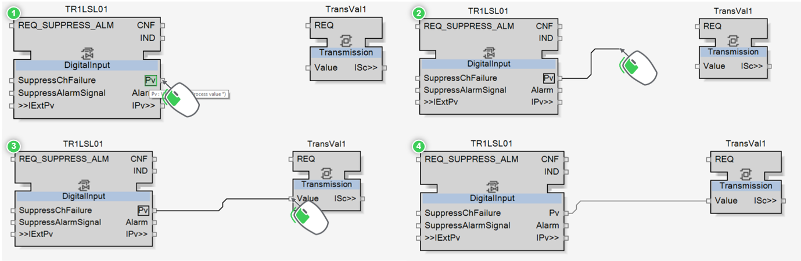
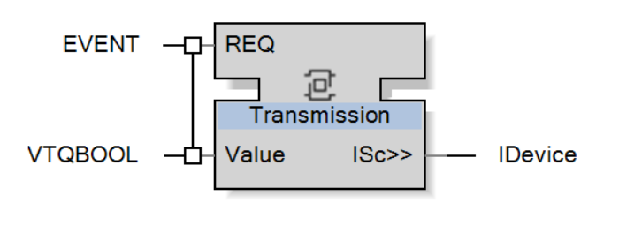
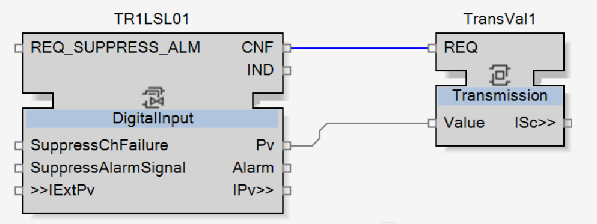

Opening the First Valve
As previously described in the topic Purpose of the Connections, the digital input TR1LSL01:
-
First receives manual orders from the operator.
-
Then, this command is transmitted to the valve TR1V01.

|
NOTE:
As TR1LSL01 receives commands manually from the operator through the HMI, then this function block does not need to be connected to receive commands. |
However, TR1V01 receives commands from TR1LSL01.
The process value of TR1LSL01 then need to be transmitted to TR1V01.
To link TR1LSL01 and TR1V01 instruments:
-
Use the composite Transmission, imported following the instructions in the topic Import Content.
-
Add it between TR1LSL01 and TR1V01.
-
Name it TransVal1.

-
Now, the function blocks have to be connected so the value is transmitted from TR1LSL01 to TR1V01.
First, the process value of TR1LSL01 has to be transmitted to TransVal1.
To link TR1LSL01 and TransVal1 instruments, connect TR1LSL01.Pv to TransVal1.Value.
|
|
NOTE:
‘Connect TR1LSL01.Pv to TransVal1.Value’ means: Connect the port Pv of TR1LSL01 to the port Value of TransVal1. In other words, we can consider that each dot means ‘port’. |


|
At this stage, the variable is connected between the two function blocks. But the step is not yet completed. |
As described in the section What is EcoStruxure Automation Expert?, EcoStruxure Automation Expert is an event driven software, following the standard IEC61499.
What does ‘event driven’ means?
That means that events are needed to:
-
Trigger the inner program of the function block.
-
Update the variables associated with them.
Here, the inner program of TransVal1 converts the Boolean value provided by the input variable Value into the adapter ISc, readable by the instruments.
|
|
NOTE:
Adapter can only dialog with an adapter of the same type. That is the reason why this conversion composite is needed. |
|
NOTE:
To learn more about adapter, watch How to Create an Adapter in EcoStruxure Automation Expert video. In addition, this topic will be introduced in the topic Introduction to Adapters. |
In addition, the input Value also need to be updated so that the inner program know the change of state of TR1LSL01.
|
|
NOTE:
As you can see in the Interface editor of this composite, Value is connected with the event REQ. So, when the event REQ is triggered, the input Value is updated. |
|
 |
There are two options to trigger the event REQ:
-
Manually
How? Online, right-click on it and select Trigger Event. This action is mostly used in testing to force updating.
-
Automatically
How? By connecting it to an output event. Then, the trigger is transmitted from a function block to another. This creates sequences. Each change in a function block will fire output events triggering the input events of the linked function blocks and so on automatically.
As the connections between the instruments need to be updated automatically, the automatic option is then chosen here to trigger Transval1.REQ. It will be done by connecting it to TR1LSL01.CNF.
|
|
NOTE:
CNF output event is fired every time the process value changes. It is also connected with TransVal1.Pv. It must then be connected to TransVal1.REQ to trigger it and update TransVal1.Pv. |
Here is the list of interactions happening between the two function blocks:
-
The process value of TR1LSL01 is changed online by the operator.
-
The TR1LSL01.CNF is triggered because of this change.
-
TR1LSL01.CNF updates TR1LSL01.Pv, so that the output variable takes the value of the process value.
-
TR1LSL01.CNF is triggering TransVal1.REQ.
-
TransVal1.REQ is updating TransVal1.Value to the value of TR1LSL01.Pv.
-
TransVal1.REQ triggers the inner program of TransVal1 with the new value of TR1LSL01.Pv.
-
As result, link TR1LSL01.CNF to TransVal1.REQ.

-
Finally, link TransVal1.ISc to TR1V01.ISc.
This adapter will transmit the Boolean value received in TransVal1 to the valve TR1V01.

|
|
At this stage, the information has been correctly transmitted from the digital input to the valve. The interactions are now completed. |